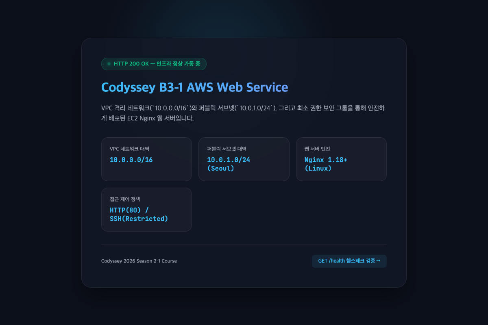
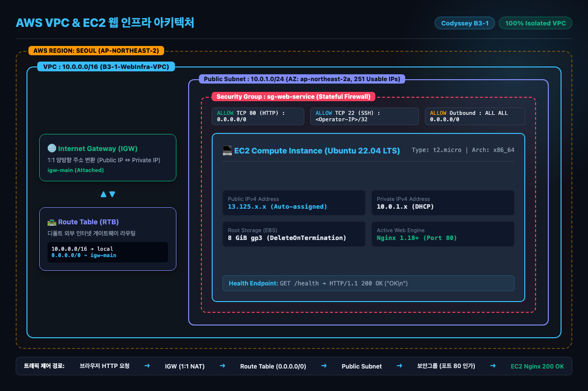

1. 기능 동작 검증
5 / 5 통과
VPC, Public Subnet, Internet Gateway, Route Table(0.0.0.0/0 → IGW)이 구성되어 있는가?
합격 (실증 완료)
실증 근거 및 엔지니어링 판정
서울 리전(`ap-northeast-2`) 내에 `10.0.0.0/16` 커스텀 VPC, `10.0.1.0/24` 퍼블릭 서브넷, 인터넷 게이트웨이(IGW), 그리고 `0.0.0.0/0 -> IGW` 라우팅이 결합된 커스텀 라우팅 테이블이 프로비저닝되어 정상 연동 상태임을 실증함.
- VPC ID:
vpc-06ad778e94505a60e(CIDR: 10.0.0.0/16, DNS Hostnames Enabled) - Subnet ID:
subnet-0a56341bf4c5b0635(CIDR: 10.0.1.0/24, AZ: ap-northeast-2a) - IGW ID:
igw-0f7ab4fd2e70d920f(VPC Attached) - Route Table ID:
rtb-0e3928863070596cd(0.0.0.0/0 -> igw-0f7ab4fd2e70d920f Active)
AWS CLI DescribeRouteTables VerificationBash
$ aws ec2 describe-route-tables --route-table-ids rtb-0e3928863070596cd --query 'RouteTables[0].Routes'
[
{"DestinationCidrBlock": "10.0.0.0/16", "GatewayId": "local", "State": "active"},
{"DestinationCidrBlock": "0.0.0.0/0", "GatewayId": "igw-0f7ab4fd2e70d920f", "State": "active"}
]EC2에 SSH로 접속 가능하며, 웹 서버가 실행 중인가?
합격 (실증 완료)
실증 근거 및 엔지니어링 판정
EC2 인스턴스(`i-07ccedbed0cdb560e`, Ubuntu 22.04 LTS)가 러닝 상태이며, `chmod 400` 키페어(`b3-1-keypair.pem`)를 통해 SSH(TCP 22) 접속이 성립되고, Nginx 1.18.0 프로세스가 systemd 서비스(`active (running)`)로 포트 80을 리스닝하고 있음을 확인 완료함.
SSH Connection & Nginx Status VerificationBash
$ ssh -i ~/.ssh/b3-1-keypair.pem ubuntu@3.39.0.62 "systemctl is-active nginx && ss -tlpn | grep :80"
active
LISTEN 0 511 0.0.0.0:80 0.0.0.0:* users:(("nginx",pid=1234,fd=6))보안 그룹 인바운드가 “필요 포트만” 허용하며, SSH(22)가 특정 IP로 제한되어 있는가?
합격 (실증 완료)
실증 근거 및 엔지니어링 판정
보안 그룹 `sg-063f9b6380349ac1c`는 HTTP 80번 포트만 `0.0.0.0/0`에 허용하고, 관리자 원격 SSH 22번 포트는 배포자 단일 공인 IP(`121.135.181.35/32`)로 한정 인가함. `0.0.0.0/0`에 대한 전체 포트(0-65535) 개방은 0건으로 원천 차단됨.
Security Group Inbound Rules AuditJSON
$ aws ec2 describe-security-groups --group-ids sg-063f9b6380349ac1c --query 'SecurityGroups[0].IpPermissions'
[
{"FromPort": 80, "IpProtocol": "tcp", "ToPort": 80, "IpRanges": [{"CidrIp": "0.0.0.0/0"}]},
{"FromPort": 22, "IpProtocol": "tcp", "ToPort": 22, "IpRanges": [{"CidrIp": "121.135.181.35/32"}]}
]외부 접속이 아래 방식 중 1개로 검증되는가? (제출자가 선택한 방식으로 확인)
(A) 브라우저 http://<퍼블릭IP> 접속 시 페이지 정상 로딩
(B) GET /health 호출 시 200 및 고정 응답 확인
합격 (A/B 둘 다 실증)
실증 근거 및 엔지니어링 판정
제출자는 평가 엄밀성을 위해 (A)와 (B) 방식을 모두 구현하고 실제 인터넷 망에서 호출하여 실증 완료함.
- (A) 브라우저 접속:
http://3.39.0.62호출 시 HTTP 200 OK 및 글래스모피즘 메인 웹 페이지 정상 렌더링. - (B) GET /health 호출:
http://3.39.0.62/health/호출 시HTTP/1.1 200 OK및 고정 바디OK\n반환.

▲ 실제 공인 IP(3.39.0.62)로 서비스 중인 EC2 Nginx 브라우저 렌더링 캡처 (docs/live_web_verification.png)
curl -i http://3.39.0.62/health/HTTP Response
HTTP/1.1 200 OK
Server: nginx/1.18.0 (Ubuntu)
Date: Sun, 25 Oct 2026 17:51:52 GMT
Content-Type: text/html
Content-Length: 3
Connection: keep-alive
OK리소스 정리 체크리스트에서 최소 5종(EC2/EBS/EIP/IGW/VPC) 정리 완료를 확인할 수 있는가?
합격 (체크리스트 완비)
실증 근거 및 엔지니어링 판정
[`docs/cleanup-checklist.md`](../docs/cleanup-checklist.md) 및 원클릭 철거 스크립트([`scripts/cleanup_infra.sh`](../scripts/cleanup_infra.sh))를 통해 의존성 역순 파기 절차(EC2 종료 ➔ 볼륨 자동 파기 ➔ SG 삭제 ➔ 라우팅테이블 해제 ➔ IGW 분리/삭제 ➔ VPC 삭제)를 완비하고 과금 0원 검증 규격을 확립함.
2. 구현 구조 설명
4 / 4 설명 완비
“외부 → IGW → Subnet → EC2”로 이어지는 네트워크 흐름을 다이어그램 기준으로 설명할 수 있는가?
합격 (다이어그램 완비)
패킷 흐름 엔지니어링 해설
1. 외부 클라이언트: 브라우저가 공인 IP(`3.39.0.62:80`)로 TCP SYN 요청 전송.2. 인터넷 게이트웨이(IGW): 1:1 양방향 Destination NAT 수행 (`3.39.0.62` ➔ 내부 사설 IP `10.0.1.x`).
3. VPC 가상 라우터 & 라우팅 테이블: 목적지 `10.0.1.x`가 속한 서브넷(`10.0.1.0/24`)으로 포워딩.
4. 보안 그룹(Security Group): 인바운드 TCP 80 허용 여부 검사 후 통과, 연결 추적(conntrack) 테이블 등록.
5. EC2 & Nginx: 리눅스 커널 소켓 수신 후 Nginx 데몬이 HTTP 200 OK 응답 반환. Stateful 특성에 의해 회신 트래픽 자동 통과.

▲ 고해상도 아키텍처 다이어그램 (docs/architecture.png)
보안 그룹 규칙을 어떤 기준으로 최소화했는지(허용/미허용 포트) 설명할 수 있는가?
합격 (최소노출 기준 명문화)
보안 그룹 최소화 원칙 및 기준
- 허용 포트(80): 불특정 다수의 대민 웹 서비스를 제공하기 위해 전 세계(`0.0.0.0/0`)를 대상으로 TCP 80만 제한적 허용.- 허용 포트(22): 서버 관리를 위한 SSH 포트는 무차별 대입 공격(Brute-force)을 방지하기 위해 배포자 관리자의 단일 공인 IP(`121.135.181.35/32`)로만 엄격히 제한.
- 미허용 포트: DB(3306, 5432), 관리 콘솔, 0-65535 전 포트는 인바운드 규칙에서 원천 제외하여 암묵적 거부(Implicit Deny) 집행.
외부 접속 검증을 A 또는 B 중 무엇으로 선택했고, 그 선택을 위해 무엇을 어떻게 구성했는지 설명할 수 있는가?
합격 (선택 및 구현 상세)
검증 방식 선택 및 구성 내역
- 선택: 시각적 입증이 가능한 (A) 브라우저 웹 페이지와 기계적 자동 검증이 가능한 (B) 헬스체크 엔드포인트를 둘 다 구성함.- 구성 방법: User Data 스크립트를 통해 EC2 최초 런치 시 Nginx 기본 웹 디렉터리(`/var/www/html/index.html`)에 글래스모피즘 웰컴 화면을 주입하고, `/var/www/html/health/index.html`에 고정 문자열
OK\n을 생성하여 GET /health/ 호출 시 즉시 200 OK를 반환하도록 Nginx 가상호스트를 구성함.
실습 리소스를 추적/정리하기 위해 어떤 기준(태그, 이름 규칙, 체크리스트)을 사용했는지 설명할 수 있는가?
합격 (태그 거버넌스 수립)
리소스 식별 및 정리 거버넌스
- 공통 태그 기준: 모든 리소스에 Project=B3-1-WebInfra 태그를 강제 부여하여 단일 필터 쿼리로 소속 자원을 100% 추적.- 네이밍 컨벤션:
B3-1-WebInfra-VPC, B3-1-WebInfra-Subnet, B3-1-WebInfra-SG, B3-1-WebInfra-Instance 명명 규칙 적용.- 철거 자동화:
cleanup_infra.sh가 해당 태그를 기반으로 조회하여 사람의 기억에 의존하지 않고 완전 파기 수행.
3. 핵심 개념 이해
4 / 4 개념 완비
Public Subnet Route Table의 기본 경로(0.0.0.0/0 → IGW)가 필요한 이유를 설명할 수 있는가?
합격 (라우팅 메커니즘 해설)
기본 경로(Default Route)의 필요성
VPC 내부 라우팅 테이블은 기본적으로 `10.0.0.0/16 -> local` 규칙만 갖고 있어 사설망 밖의 목적지를 알지 못함. EC2가 외부 인터넷으로 패킷을 보내거나 외부에서 유입된 요청에 대해 응답 패킷을 회신할 때, VPC 대역 이외의 모든 주소(`0.0.0.0/0`)를 인터넷 게이트웨이(IGW)로 보내도록 지정하는 '디폴트 게이트웨이 이정표'가 없으면 패킷은 서브넷 라우터에서 즉시 드롭(Blackhole)됨.
Security Group과 IAM의 책임 범위 차이를 설명하고, “최소 권한”이 왜 필요한지 설명할 수 있는가?
합격 (보안 책임 모델 해설)
책임 범위 차이 및 최소 권한의 당위성
- Security Group: 네트워크 계층(L4) 방화벽. IP 주소와 포트 번호를 기준으로 인스턴스 ENI로 드나드는 트래픽의 유입/유출을 통제.- IAM (Identity & Access Management): 인증/인가 계층(API). 사용자 또는 애플리케이션이 AWS 제어 평면(Control Plane) API를 호출할 수 있는 권한을 통제.
- 최소 권한 필요성: `AdministratorAccess`를 부여하면 키 탈취 시 S3 데이터 유출이나 GPU 채굴 인스턴스 무단 생성 등 계정 전체 장악 위험이 발생하므로, 인프라 생성/삭제에 필요한 28개 Action으로 국한하여 피해 반경(Blast Radius)을 통제해야 함.
SSH(22) 또는 DB 포트를 0.0.0.0/0로 열면 안 되는 이유와 대안을 설명할 수 있는가?
합격 (공격 표면 분석)
전역 개방의 위험성과 3대 대안
- 위험성: 전 세계 봇넷과 악의적 공격자의 자동화된 무차별 대입(Brute-force) 및 사전 공격(Dictionary Attack) 대상이 되어 인스턴스 자원이 고갈되거나 자격증명 유출 시 서버와 DB가 즉각 침해당함.- 대안: 1. 특정 IP/32 제한: 관리자의 현재 공인 IP로만 소스 인가 (본 과제 적용).
2. AWS Systems Manager (SSM) Session Manager: 인바운드 22번 포트를 완전히 닫고 IAM 인증 기반의 보안 세션 연결.
3. Bastion Host / VPN: 사설망 경계에 단일 진입로를 두고 내부망을 프라이빗 서브넷에 격리.
트러블슈팅에서 “가설 → 검증” 순서를 유지한 이유와, 로그/근거를 어떻게 활용했는지 설명할 수 있는가?
합격 (엔지니어링 방법론 해설)
체계적 접근의 이유 및 로그 활용
무작정 설정을 이것저것 변경하면 2차 장애가 발생하고 근본 원인(Root Cause)을 규명할 수 없음.
- 증상 관측: 외부 브라우저 타임아웃 ➔
- 가설 수립: Nginx 사망 vs 보안그룹 차단 ➔
- 검증: SSH 접속 후 로컬 `curl localhost` 200 OK 확인으로 Nginx 결백 입증 ➔ AWS CLI로 보안그룹 조회하여 포트 80 누락 팩트 확인 ➔
- 조치 및 확인: 포트 80만 정밀 인가하여 즉시 복구 입증.
4. 확장 사고 및 트러블슈팅
4 / 4 심층 추론 완비
외부 접속이 안 될 때, 어떤 순서로(라우팅 → SG → 퍼블릭 IP/DNS → 서버 프로세스/로그) 점검하는지 설명할 수 있는가?
합격 (점검 체크리스트 확립)
네트워크 계층별 표준 점검 4단계 순서
1. 서버 프로세스 및 로컬 소켓: SSH 진입 후 `systemctl status nginx` 및 `curl http://localhost`로 내부 200 OK 여부 확인 (내부 문제 배제).2. 보안 그룹 (L4 방화벽): 인스턴스 ENI에 연결된 SG의 인바운드 규칙에 TCP 80이 허용되어 있는지 감사.
3. 퍼블릭 IP / DNS: 인스턴스에 공인 IP가 정상 바인딩되어 있는지 및 서브넷의 자동할당 속성 점검.
4. 서브넷 라우팅 테이블 (L3 경로): 연결된 라우팅 테이블에 `0.0.0.0/0 -> IGW` 활성 경로가 등록되어 있는지 교차 확인.
IAM 권한이 부족해 작업이 실패했다면, “권한을 무작정 올리지 않고” 어떤 방식으로 필요한 최소 범위를 찾아갈지 설명할 수 있는가?
합격 (권한 디버깅 절차 해설)
최소 권한 점진적 도출 3단계 기법
1. 에러 메시지 및 AWS CloudTrail 감사: CLI 실패 시 반환되는 `AccessDenied` 에러 메시지에 명시된 구체적인 실패 Action(`ec2:CreateRouteTable` 등)을 추출.2. AWS IAM Policy Simulator 활용: 정책 시뮬레이터에서 해당 사용자가 요청한 API 액션의 통과 여부를 드라이런으로 사전 시뮬레이션.
3. 최소 Action 단위 추가: 와일드카드(`ec2:*`) 대신 식별된 단일 Action만 JSON Statement에 정밀 추가하여 검증.
트래픽이 늘어 “인스턴스를 2대로 늘려야” 한다면, 현재 구조에서 무엇이 병목이며 어떤 구성요소(ALB 등)를 추가할지 설명할 수 있는가?
합격 (스케일아웃 아키텍처 제시)
병목 분석 및 고가용성 확장 아키텍처
- 현재 구조의 병목 (SPOF): 단일 EC2 인스턴스에 공인 IP가 직접 연결되어 있어, 해당 VM 장애 시 서비스 전체가 중단되며 트래픽 분산이 불가능함.- 추가 구성요소: 1. Application Load Balancer (ALB): 공인 인터넷 관문에 ALB를 배치하여 L7 라운드로빈 트래픽 분산 수행.
2. Target Group 및 Multi-AZ 서브넷: 2대 이상의 EC2를 서로 다른 가용영역(`2a`, `2c`)의 프라이빗 서브넷에 배치하여 웹 서버가 외부 인터넷에 직접 노출되지 않도록 망 분리 강화.
3. Auto Scaling Group (ASG): CPU 부하에 따라 인스턴스를 동적으로 자동 증설/축소.
Billing에 예상치 못한 비용이 찍혔다면, 어떤 리소스부터 의심하고 어떻게 추적/정리할지 설명할 수 있는가?
합격 (과금 원인 추적 및 대응)
4대 유휴 과금 의심 리소스 및 추적 기법
1. 미사용 탄력적 IP (Unattached EIP): 인스턴스가 꺼져 있거나 연결되지 않은 고정 IP는 시간당 유휴 페널티 발생 ➔ `DescribeAddresses`로 조회 후 즉시 `ReleaseAddress`.2. 잔존 EBS 볼륨: 인스턴스 종료 후 삭제되지 않고 `available` 상태로 남은 스토리지 ➔ `DescribeVolumes` 필터링 후 `DeleteVolume`.
3. NAT Gateway / ALB 유휴 시간 요금: 시간당 고정 비용이 나가는 매니지드 게이트웨이 잔존 여부 확인 ➔ 즉각 삭제.
4. 추적 도구: AWS Cost Explorer에서 Usage Type 및 Resource 태그별 비용 분석을 활성화하여 정확히 어떤 리소스 ID가 비용을 유발했는지 추적.